Firmware custom · M-VAVE FM-1
Un firmware complet et léger pour le M-VAVE FM-1, pensé et illustré à Bruxelles par Piknik Elektronik. Six pistes, synthèse analogique MS-20, FM6, lo-fi SNCB, séquenceur 64 pas et dessins originaux qui s’animent avec ta musique.
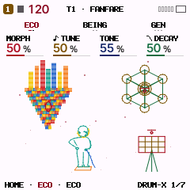
Créations originales
Capturés directement depuis le firmware BRUSSELS. Chaque moteur a son personnage et réagit en direct au son et aux potards.
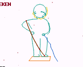
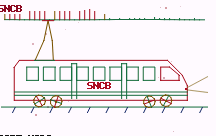
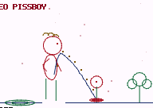
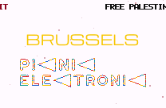
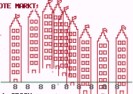
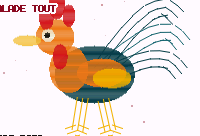
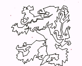
Sur l’écran 240×240
Rien de redessiné : ce sont les vraies pages du FM-1 en mouvement, avec les quatre potards en haut et l’animation au centre.
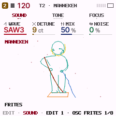
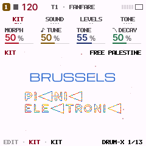
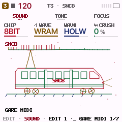
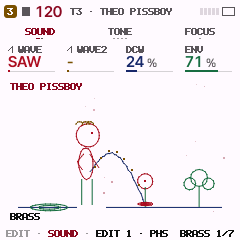
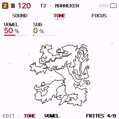
Prise en main
L’émulateur fait tourner le vrai firmware BRUSSELS. Teste chaque son, chaque dessin et le séquenceur sans brancher le FM-1.
Branche ton FM-1 en USB (câble data) dans Chrome, Brave ou Edge, clique sur Installer et laisse redémarrer sans débrancher.
L’éditeur web affiche tes pistes, sons et projets en direct pendant que le FM-1 joue, avec sauvegarde en un clic.